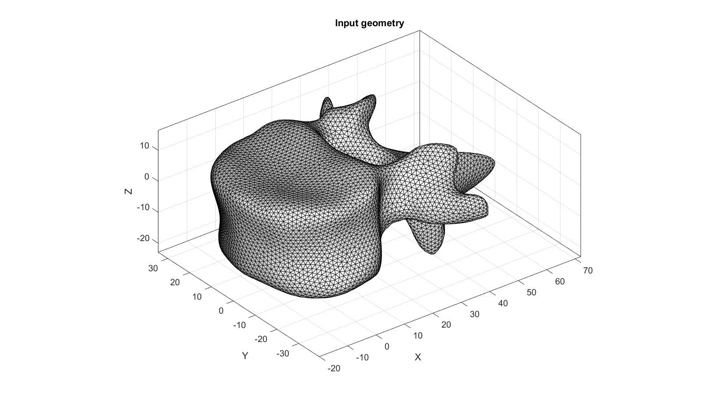
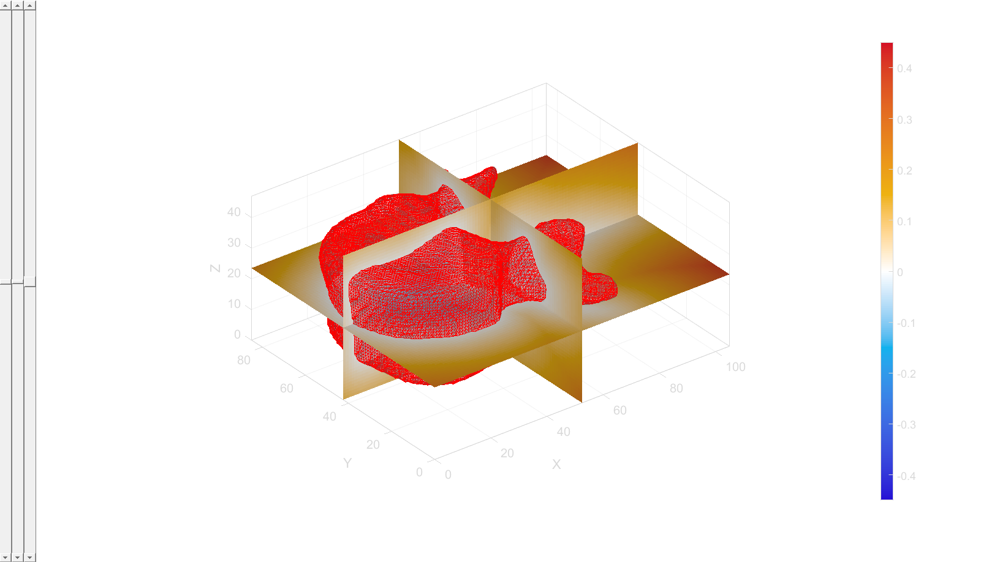
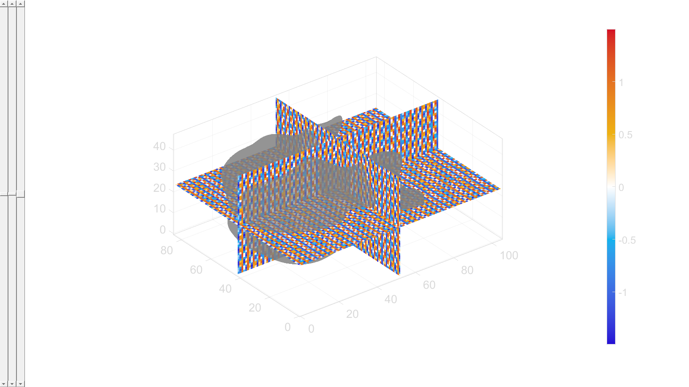
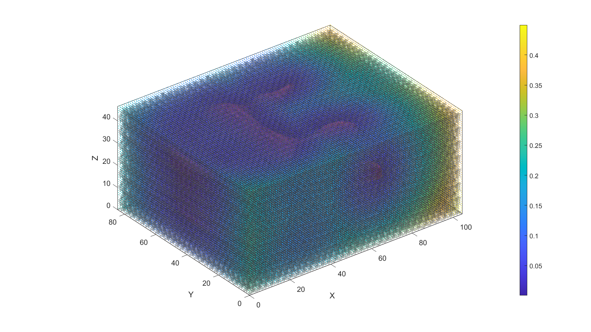
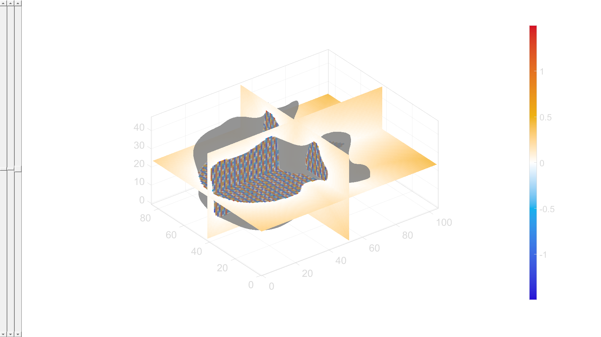
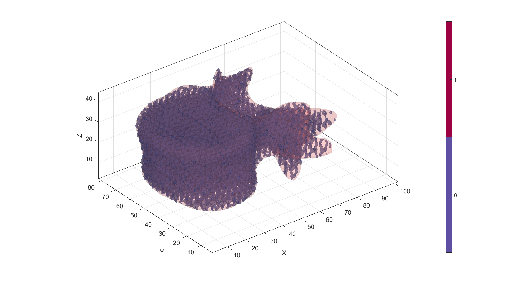

DEMO_0012_infill_STL_Lattice
This is a demo for:
- Building infill lattice structures within a closed surface STL, using TPMS or Spinodoid structures.
Contents
Name
License: to license Author: Mahtab Vafaee, mahtab.vafaee@gmail.com
Change log: 2023/11/15 MV Created 2024/02/06 MV Edited ----------------------------------------------------------------------
clear; close all; clc;
Plot settings
cMap=jet(250); faceAlpha1=1; faceAlpha2=0.65; edgeColor1='none'; edgeColor2='none'; fontSize=25; pColors=gjet(6);
Arbitrary surface data
% vertebra data from STL data=graphicsModels(11); % Vertices and faces V=data.V; F=data.F;
Visualiza patch data
cFigure; title('Input geometry'); gpatch(F,V,'w','k', 1); axisGeom; axis on; camlight headlight;
Create an image on the grids
Vi=V-min(V,[],1); %shifting to the origin (0,0,0) scaleFactor=max(Vi(:)); Vi=Vi./scaleFactor; % Normalizing the edges Fb=F; % boundary faces the same as F voxelSize=0.01; [M,G,~]=patch2Im(Fb,Vi,[],voxelSize); % converting to image L= M==1; % selecting the inside voxels % voxelSize=G.voxelSize; imOrigin=G.origin; [J,I,K]=meshgrid(1:1:size(M,2),1:1:size(M,1),1:1:size(M,3)); [X,Y,Z]=im2cart(I,J,K,voxelSize); VG=[X(:) Y(:) Z(:)]; % grid vertices Vi=Vi-imOrigin(ones(size(Vi,1),1),:); % shift the vertices Vsm=patchCentre(Fb,Vi);% find the cneter of each face [DG,indClosest]=minDist(VG,Vsm); % finding the closest Vsm to each grid DG_im=reshape(DG,size(L)); Et=[Fb(indClosest,:) (1:numel(indClosest))'+size(Vi,1)]; % tetrahedral elements with on face from Fs & a vertix from VG Vt=[Vi; VG]; % merging the verices [VE,logicPositive]=tetVol(Et,Vt,0); % positive and negative volume of generated tet elements logicPositive=reshape(logicPositive,size(L)); DG_im(~logicPositive)=-DG_im(~logicPositive); % apply negative image values to inner voxels
Create an isosurface on the image (optinal)
[Fiso,Viso] = isosurface(X,Y,Z,DG_im,0); %Create an isosurface on DG_im=0 Viso=Viso./(voxelSize); %scale vertices to image size
Visualization
sv3(DG_im); colormap warmcold; m=max(abs(DG)); caxis([-m m]) Vi=Vi./voxelSize; %scale vertices to image size hold on; gpatch(Fb,Vi,'kw','none',0.3); gpatch(Fiso,Viso,'rw','r',0.2); axisGeom; camlight headlight; drawnow;
Evaluate triply periodic function
% set input parameteres freq=[200, 200, 100]; %frequency of TPMS/angles for Spinododi (45,45,30) levelset=0; %TPMS relative density factor inputStruct.levelset=levelset; inputStruct.numPeriods=freq; inputStruct.surfaceType='g'; %{'g','d','n','p','pw','w','spin',} if isequal(inputStruct.surfaceType,'spin') inputStruct.numWaves=1000; %In the case of Spinododi inputStruct.relativeDensity=0.4; inputStruct.waveNumber=7*pi; end % Evaluate TPMS function [Fg,Vg,S]=TPMSpin(X,Y,Z,inputStruct); Vg= Vg-min(Vg,[],1); %shift grids to [0,0,0] Vg=Vg./(voxelSize); %Scale to image size % visualize evaluated gyroid field function sv3(S); colormap warmcold; hold on; gpatch(Fb,Vi,'kw','none',0.6);
Visualize surfaces
cFigure; hold on; gpatch(Fg,Vg,'kw','none',0.3); %gyroid surface gpatch(Fb,Vi,'rw','none',0.4); %Vertebrae surface scatterV(VG./voxelSize,1,DG); %Image grids colorbar; camlight headlight; axisGeom; drawnow;
Trim using boundary
Ls=(DG_im)<=0; % Inner grids Sn=DG_im; Sn(Ls)=S(Ls); % trim the outside gyroid field
Visualize trimmed field
sv3(Sn); hold on; m=max(abs(Sn(:))); colormap warmcold; gpatch(Fb,Vi,'kw','none',0.6);
Construct iso-surface
[Fsn,Vsn] = isosurface(X,Y,Z,Sn,0.5); %draw trimmed isosurface Vsn=Vsn./voxelSize; %scale vertices to image size
Visualize surface
cFigure; hold on; gpatch(Fsn,Vsn,[0.3, 0.3, 0.5],'none',0.5); gpatch(Fb,Vi,'rw','none',0.2); axisGeom; colormap spectral; icolorbar; camlight headlight; axis on; drawnow;